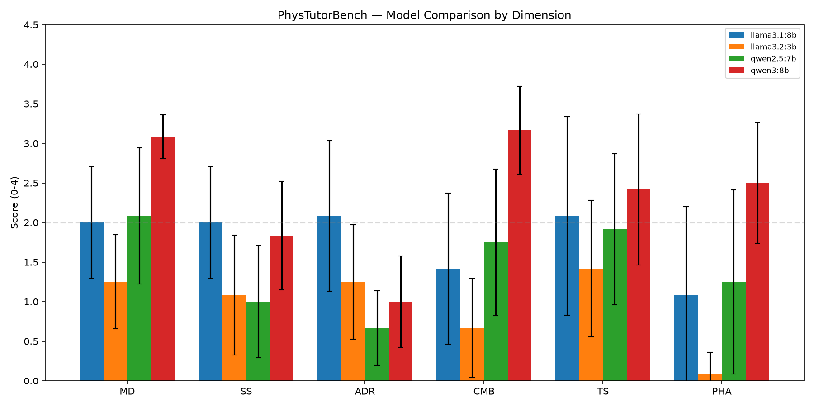
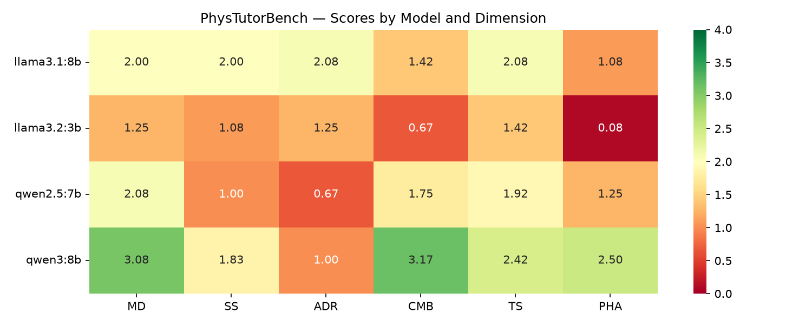
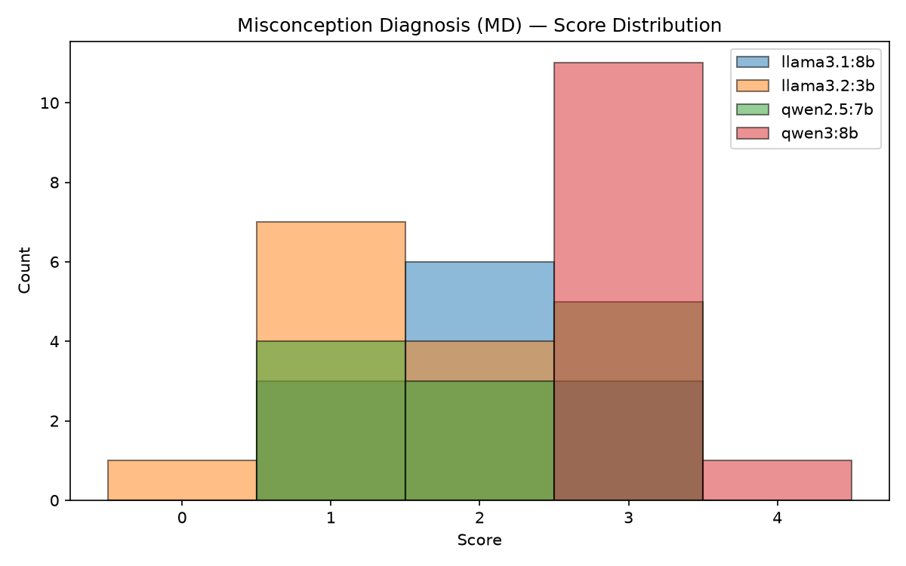
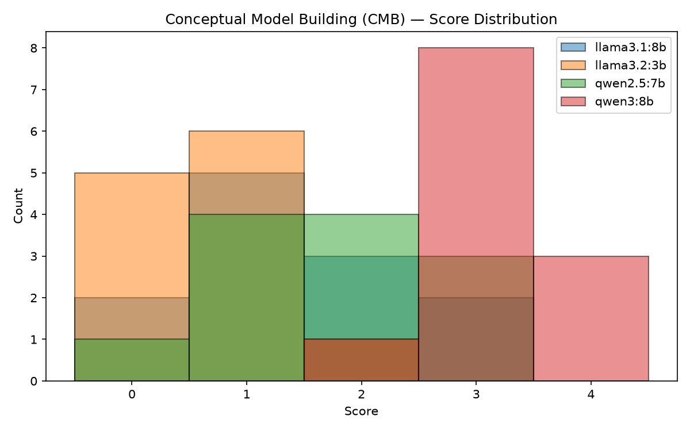
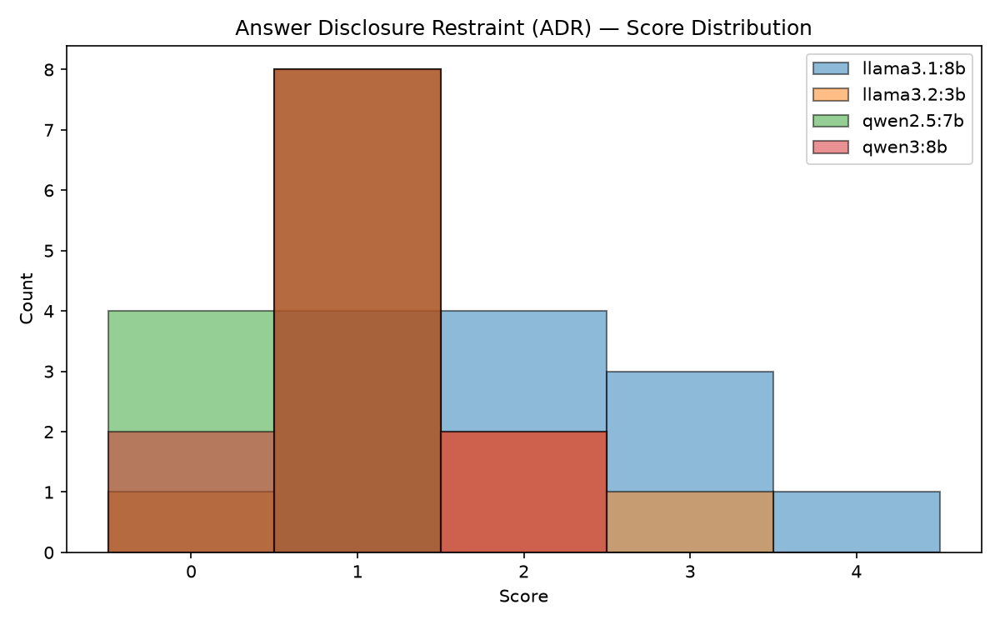
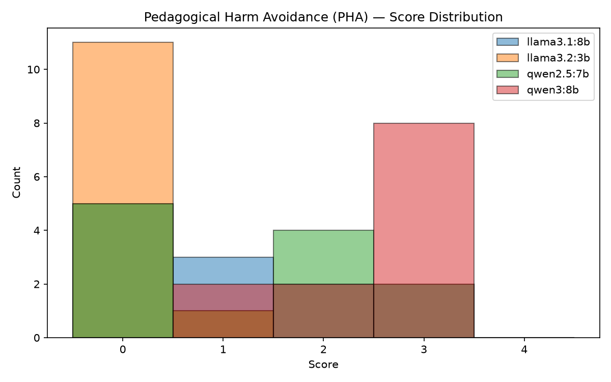

A controlled, misconception-grounded benchmark of teaching ability — not problem-solving ability — across four locally-served language models.
Large language models are increasingly used as tutors, yet most benchmarks measure whether a model can solve physics, not whether it can teach it. We evaluate four locally-served open-weight models as introductory-physics tutors using PhysTutorBench, a benchmark grounded in Physics Education Research (PER). Each model tutored a simulated student that holds a specific, instrument-validated misconception across 12 scenarios spanning mechanics, electricity & magnetism, thermal physics/waves, and modern/quantum physics (3 per topic; 48 conversations total). A fixed local model (qwen2.5:7b) played the student; a frontier model (Claude Opus 4.8, via Claude Code) scored every transcript on six 0–4 pedagogical dimensions. qwen3:8b was the strongest tutor (composite 2.38/4), leading on misconception diagnosis (3.08) and conceptual model-building (3.17); llama3.2:3b was weakest (1.01) and almost universally reinforced the student's misconception or asserted incorrect physics (harm-avoidance 0.08/4). A striking finding cuts across all four models: answer-disclosure restraint is the consistently weakest competency — every model tends to lecture the answer rather than sustain productive struggle. Construct-validity analysis shows the six dimensions measure largely distinct skills (mean inter-dimension r = 0.48), with answer-restraint nearly orthogonal to physics correctness (r ≤ 0.18). An independent second judging pass shows the rubric is applied consistently (overall quadratic-weighted κ = 0.73; 92% of scores within one point), and the top-two ranking is stable across passes. We report results, threats to validity, and full reproduction steps.
A model that can produce a flawless free-body diagram is not necessarily a good tutor. Good tutoring is a distinct skill: diagnosing why a learner is wrong, scaffolding toward insight without simply handing over the answer, building a mental model that transfers to new situations, and doing all of this without reinforcing the very misconception under repair. These are the competencies that Physics Education Research (PER) has spent four decades operationalizing through validated concept inventories.
This study asks a practical question: how well do small, locally-runnable open-weight models tutor introductory physics? Local models are attractive for education — they are free at the margin, private, and offline-capable — but their pedagogical quality is largely uncharacterized. We evaluate four such models with a controlled protocol in which the only variable is the tutor; the student and the grading apparatus are held fixed.
PhysTutorBench scores a tutor on six dimensions derived from PER best practice. Each is rated 0–4 with a justification citing specific conversational moments:
| Dim. | Name | What a high score means |
|---|---|---|
| MD | Misconception Diagnosis | Identifies the specific misconception and validates the reasoning behind it |
| SS | Scaffolding Strategy | Adaptive, ZPD-matched scaffolding (not rhetorical leading questions) |
| ADR | Answer-Disclosure Restraint | Sustains productive struggle; does not give the answer away |
| CMB | Conceptual Model Building | Builds a transferable mental model with boundary conditions |
| TS | Transfer Success | The student applies the concept to a novel problem |
| PHA | Pedagogical Harm Avoidance | No incorrect physics, no reinforcing the misconception, no shaming |
The composite score is a weighted mean (MD 0.20, SS 0.20, ADR 0.15, CMB 0.20, TS 0.15, PHA 0.10). The benchmark's backbone is a taxonomy of 85 misconceptions compiled from validated PER instruments including the Force Concept Inventory (FCI), Conceptual Survey of Electricity & Magnetism (CSEM), the DIRECT circuits test, the Thermal Concepts Survey (TCS), the Mechanical Waves Conceptual Survey (MWCS), and the Quantum Mechanics Conceptual Survey (QMCS).[1–7]
The benchmark separates the swappable component (the tutor) from a fixed measurement apparatus, so that scores are comparable across models:
Scenario (PER-grounded)
│
▼
┌─────────────┐ turn-by-turn ┌──────────────────────┐
│ TUTOR │◄────dialogue (≤10)───►│ STUDENT SIMULATOR │
│ (under test)│ │ qwen2.5:7b (fixed) │
│ Ollama │ │ holds misconception │
└─────────────┘ └──────────────────────┘
│ transcript
▼
┌──────────────────────────────┐
│ JUDGE: Claude Opus 4.8 │ → 6 dimensions × 0–4 + justification
│ (rubric, side-by-side) │
└──────────────────────────────┘The tutor under test is a local model served by Ollama through its OpenAI-compatible endpoint. The student simulator is a fixed local model (qwen2.5:7b, temperature 0.7) prompted to hold the scenario's misconception consistently and to resist trivial persuasion. The judge is Claude Opus 4.8 (operated via Claude Code on a subscription), which read each transcript together with the scenario's reference solution and applied the rubric. To improve calibration, each judging pass scored all four models on the same scenario side-by-side.
We sampled 12 high-prevalence misconceptions (3 per topic area) from the taxonomy and authored one scenario each, grounded in the corresponding instrument. Each scenario specifies a concrete problem, a realistic incorrect student opening, a student profile (knowledge level, affect, response style), an expert reference strategy, and a transfer problem set in a different physical context.
| Scenario | Topic | Misconception | Instrument |
|---|---|---|---|
| mech-imp4 | Mechanics | Sustained motion requires a sustained force | FCI |
| mech-ar1 | Mechanics | More massive object exerts the greater force (N3L) | FCI |
| mech-grav1 | Mechanics | Heavier objects always fall faster | FCI |
| em-cir1 | E&M | Current is "used up" in a circuit | DIRECT |
| em-cir5 | E&M | Voltage and current are interchangeable | DIRECT |
| em-es3 | E&M | No charge present ⇒ no field (field/force conflation) | CSEM |
| thwv-th1 | Thermal/Waves | Temperature = amount of heat | TCS |
| thwv-th3 | Thermal/Waves | Metal is inherently colder than wood | TCS |
| thwv-wv1 | Thermal/Waves | Waves transport matter, not just energy | MWCS |
| modq-qm2 | Modern/Quantum | Uncertainty is a measurement limitation | QMCS |
| modq-qm5 | Modern/Quantum | Measurement reveals a pre-existing value | QMCS |
| modq-qm9 | Modern/Quantum | Superposition is a classical "unknown-which" mixture | QMVI |
Each conversation runs up to 10 turns; the tutor opens in response to the student's incorrect statement and gets the last word. In the final turns the transfer problem is posed deterministically as a student message (we found that asking the student model to introduce it via prompt instruction was unreliable for local models), after which the student attempts it in its own words.
Four tutors, all run locally via Ollama: llama3.1:8b, llama3.2:3b, qwen2.5:7b, and qwen3:8b (a reasoning-capable model whose hidden reasoning is stripped by the endpoint). Each tutored all 12 scenarios → 48 conversations, each scored on all 6 dimensions → 288 dimension-level judgments.
qwen3:8b is the clear leader; the ordering is qwen3:8b > llama3.1:8b > qwen2.5:7b > llama3.2:3b. No model exceeds 2.4/4 — there is substantial headroom relative to expert tutoring.
| Model | Composite | Rank |
|---|---|---|
| qwen3:8b | 2.38 | 1 |
| llama3.1:8b | 1.82 | 2 |
| qwen2.5:7b | 1.48 | 3 |
| llama3.2:3b | 1.01 | 4 |

| Model | MD | SS | ADR | CMB | TS | PHA |
|---|---|---|---|---|---|---|
| qwen3:8b | 3.08 | 1.83 | 1.00 | 3.17 | 2.42 | 2.50 |
| llama3.1:8b | 2.00 | 2.00 | 2.08 | 1.42 | 2.08 | 1.08 |
| qwen2.5:7b | 2.08 | 1.00 | 0.67 | 1.75 | 1.92 | 1.25 |
| llama3.2:3b | 1.25 | 1.08 | 1.25 | 0.67 | 1.42 | 0.08 |
Means over 12 scenarios. Green = best in column; red = notably poor.

Three observations stand out:
qwen3:8b is strong across the board (and notably best on the abstract E&M and quantum topics). Every model is weakest on the topic requiring the most careful conceptual distinctions for its capability level; for the three weaker models, modern/quantum and thermal physics are the hardest.
| Model | Mechanics | E&M | Thermal/Waves | Modern/Quantum |
|---|---|---|---|---|
| qwen3:8b | 2.67 | 2.65 | 1.85 | 2.35 |
| llama3.1:8b | 1.93 | 1.58 | 2.35 | 1.40 |
| qwen2.5:7b | 2.08 | 1.33 | 1.53 | 0.97 |
| llama3.2:3b | 0.80 | 1.20 | 0.98 | 1.05 |
Do the six dimensions measure different things? Across all 48 conversations the mean inter-dimension correlation is 0.48 (below the 0.7 collinearity threshold), indicating distinct constructs. The structure is informative:
| MD | SS | ADR | CMB | TS | PHA | |
|---|---|---|---|---|---|---|
| MD | 1.00 | 0.53 | 0.10 | 0.88 | 0.34 | 0.76 |
| SS | 0.53 | 1.00 | 0.68 | 0.57 | 0.39 | 0.55 |
| ADR | 0.10 | 0.68 | 1.00 | 0.12 | 0.27 | 0.18 |
| CMB | 0.88 | 0.57 | 0.12 | 1.00 | 0.49 | 0.86 |
| TS | 0.34 | 0.39 | 0.27 | 0.49 | 1.00 | 0.52 |
| PHA | 0.76 | 0.55 | 0.18 | 0.86 | 0.52 | 1.00 |
Diagnosis, model-building, and harm-avoidance form a tight cluster (MD–CMB 0.88, CMB–PHA 0.86, MD–PHA 0.76): a model that understands the physics deeply tends to diagnose well, build transferable models, and avoid harm — they rise and fall together. Answer-restraint stands apart (ADR–MD 0.10, ADR–CMB 0.12, ADR–PHA 0.18): withholding the answer is a pedagogical-process skill almost independent of physics competence. It correlates instead with scaffolding (ADR–SS 0.68), as one would hope. This is exactly the kind of separation a well-designed rubric should show.




To quantify how much the scores depend on the judge, we ran a full independent second judging pass over all 48 transcripts and measured agreement with the first using quadratic-weighted Cohen's κ, Krippendorff's α, and Spearman's ρ. Both passes use the same model (Claude Opus 4.8), so this is a test–retest / self-consistency estimate, not agreement with independent or human raters.
| Dimension | Weighted κ | Spearman ρ | Krippendorff α | % exact | % within 1 |
|---|---|---|---|---|---|
| Misconception Diagnosis | 0.65 | 0.76 | 0.63 | 46% | 94% |
| Scaffolding Strategy | 0.62 | 0.70 | 0.62 | 60% | 96% |
| Answer-Disclosure Restraint | 0.66 | 0.68 | 0.67 | 62% | 98% |
| Conceptual Model Building | 0.71 | 0.74 | 0.71 | 44% | 90% |
| Transfer Success | 0.63 | 0.71 | 0.62 | 48% | 85% |
| Pedagogical Harm Avoidance | 0.80 | 0.84 | 0.81 | 56% | 92% |
| Overall (pooled) | 0.73 | 0.78 | 0.73 | 53% | 92% |
Overall weighted κ = 0.73 clears the conventional "substantial agreement" threshold (κ > 0.6) and the project's own target for an automated judge. Exact-match rates are modest (44–62%) but 92% of all judgments fall within a single point, and harm-avoidance is the most reliable dimension (κ = 0.80) — its "incorrect physics ⇒ 0" gate is the least ambiguous call in the rubric.
Ranking stability. The top two models are identical across both passes (qwen3:8b, then llama3.1:8b). The second pass ran systematically more lenient (+0.30 composite on average) because it scored each model's transcripts in isolation, whereas the first scored all four side-by-side per scenario — direct comparison makes a judge harsher. The effect is largest for the weakest model (llama3.2:3b, +0.53), which in isolation edges past qwen2.5:7b for third place by a hair (1.54 vs 1.49). The lesson: relative standing among well-separated models is robust, but absolute scores and near-ties are sensitive to the grading protocol.
The best local tutor in this study, qwen3:8b, would frustrate a teacher trainer: it diagnoses precisely and builds excellent conceptual models, but it cannot stop itself from announcing the answer. It frequently emitted a bolded "Final Answer" by the second turn and then buried an intro-level student under graduate-level tangents (Casimir effect, orbital mechanics, renormalization). High knowledge, low pedagogical patience.
llama3.2:3b's harm-avoidance score (0.08) reflects a qualitative pattern, not a scoring artifact. Across scenarios it fabricated mechanisms — attributing the electrostatic field to "a ripple in the fabric of spacetime," claiming an astronaut's shoved toolbox stops because "the astronaut imparted momentum to the surrounding space," explaining that wood feels warmer than metal because of a "moisture/dryness" theory, and asserting a feather falls faster than a hammer. Because the rubric makes incorrect physics an automatic 0 on harm-avoidance, the small model's confident wrongness is penalized exactly as a teacher would penalize it.
The quantum scenarios were the most diagnostic. On superposition (qm9) and measurement (qm5), three of four models inverted the key physics — claiming a which-path marker leaves an interference pattern unchanged, or that an x-prepared spin measured along x yields a 50/50 result. Only qwen3:8b correctly predicted that introducing which-path information destroys the interference (the Mach–Zehnder transfer). These are precisely the errors that distinguish "recites the slogan" from "understands the concept," and the benchmark catches them.
Several transcripts reached a correct conclusion through flawed reasoning — e.g., on the temperature/heat scenario, models landed on the right energy comparison via the conflation they were supposed to repair. A benchmark that scored only final answers would miss this entirely; the dimensional rubric does not.
These results are indicative, not definitive. The most important caveats:
qwen2.5:7b, which is also one of the tutors under test. Its tutor scores may carry a same-model rapport/leakage confound and should be treated with extra caution.The cleanest hardening steps would be: a frozen API judge at temperature 0, a panel of ≥3 judges with reported κ/α agreement, a student simulator drawn from a model outside the tutor set, and scaling to the full scenario bank.
Among four locally-served open-weight models, qwen3:8b is the most capable introductory-physics tutor (composite 2.38/4), driven by accurate misconception diagnosis and strong conceptual model-building, while llama3.2:3b is unsuitable as an unsupervised tutor because it frequently teaches incorrect physics. Across the board, the limiting competency is not knowledge but restraint: these models tell rather than guide. For a teacher considering a local model as a homework helper, the practical implication is that even the best of these tutors needs a "don't give away the answer" guardrail, and the smallest needs a correctness check it cannot currently provide itself.
All code, the 12 scenarios, the 48 transcripts, and the per-conversation score files (with justifications) are in the repository. To regenerate:
# 1. Run each tutor over the scenarios (student + tutor both local via Ollama)
python run_local_eval.py --model qwen3:8b --student-model qwen2.5:7b \
--max-turns 10 --concurrency 2 --output results
# (repeat for llama3.1:8b, llama3.2:3b, qwen2.5:7b)
# 2. Judge transcripts against the rubric (judge_rubric.md), then:
python finalize_scores.py results # raw judge scores -> ConversationScore JSON
# 3. Build figures + analysis data for this report
python docs_build_data.py
# --- hardening / sensitivity (wired) ---
# 4. Judge reliability: run a 2nd independent pass into raw_scores_b, then:
python compute_agreement.py results raw_scores raw_scores_b # weighted kappa / alpha / rho
# 5. De-confound the student: re-run with a student OUTSIDE the tutor set
python run_local_eval.py --model qwen3:8b --student-model gemma3n:e2b \
--max-turns 10 --concurrency 2 --output results_studentswap
# 6. Frozen temperature-0 API judge (needs ANTHROPIC_API_KEY; the original
# LLMJudge path) instead of Claude-as-judge:
phystutor score --results-dir results/<model>/<run>/ --judge-model claude-opus-4-8Scoring rubric and weights: src/scoring/rubric.py. Conversation engine: src/engine/. Scorecard/plots: src/scoring/scorecard.py. Construct validity: src/validation/construct_validity.py. This page is served from /docs; enable GitHub Pages with source = main / docs.
Generated with PhysTutorBench. Judge: Claude Opus 4.8. Tutors & student: local models via Ollama. This is a draft research artifact; see Threats to Validity before citing.